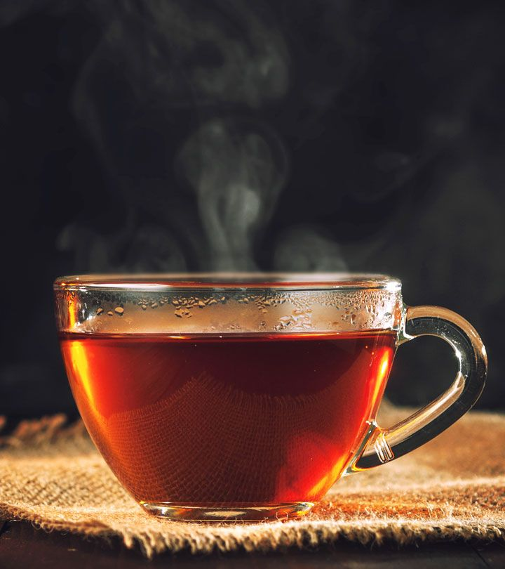

|
|  |
Чашка чаяСлово «чай» может описывать:
Культивируемое вечнозелёное многолетнее тропическое растение семейства чайных, листья которого используются для приготовления напитка
Высушенные и специальным образом обработанные листья этого растения, из которых готовят напиток
Ароматный напиток, настоянный на таких листьях
Настой на каких-либо листьях, травах и т. п., заменяющий такой напиток
Времяпрепровождение с питьём чая и угощением; чаепитие
Также в широком смысле чаем называют любой напиток, приготовленный путём заваривания предварительно подготовленного растительного материала |
|